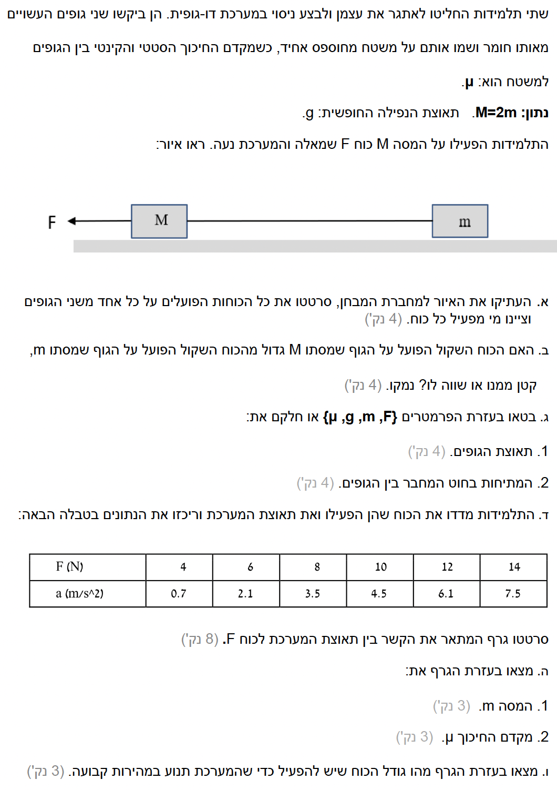

לפנינו בעיה קלאסית בדינמיקה העוסקת בשני גופים הקשורים בחוט הנעים יחד על משטח אופקי עם חיכוך.
ננתח את הכוחות, נבנה משוואות תנועה, ונשתמש בגרף כדי לחלץ נתונים פיזיקליים.

[תמונת השאלה המקורית]לא נמצאה תמונה בשם question-image.png באותה תיקייה.
סעיף א': תרשים כוחות חופשי (FBD)
מה נתון: שני גופים בעלי מסות \( m \) ו-\( M \) (כאשר נתון \( M = 2m \)) מונחים על משטח אופקי. הגופים קשורים בחוט חסר מסה. כוח חיצוני \( F \) מושך את המסה \( M \) שמאלה. מקדם החיכוך הקינטי בין הגופים למשטח הוא \( \mu \). המערכת נעה שמאלה.
מה מחפשים: לשרטט תרשים כוחות חופשי עבור כל אחד משני הגופים בנפרד, ולציין מי (איזה גוף/סביבה) מפעיל כל כוח.
נוסחאות מהדף: \( F_g = mg \)\( f_k = \mu_k N \)
פתרון צעד-אחר-צעד:
נשרטט את הכוחות עבור כל גוף בנפרד. כיוון כוח החיכוך הוא תמיד מנוגד לכיוון התנועה (במקרה שלנו, התנועה שמאלה ולכן החיכוך ימינה).
תרשים כוחות לגוף \( m \)
\( N_1 \): כוח נורמלי המופעל ע"י המשטח.
\( mg \): כוח הכובד (ע"י כדור הארץ).
\( T \): כוח מתיחות (ע"י החוט).
\( f_{k1} \): חיכוך קינטי (ע"י המשטח).
תרשים כוחות לגוף \( M \)
\( N_2 \): כוח נורמלי (ע"י המשטח).
\( Mg \): כוח הכובד (ע"י כדור הארץ).
\( F \): כוח חיצוני (ע"י התלמידות).
\( T \): כוח מתיחות (ע"י החוט).
\( f_{k2} \): חיכוך קינטי (ע"י המשטח).
טיפ מורה:
שימו לב לכיוון כוחות החיכוך! כוח החיכוך הקינטי מתנגד תמיד לכיוון התנועה היחסית של הגוף על המשטח. מכיוון שהגופים נעים שמאלה, החיכוך פועל עליהם ימינה. בנוסף, לאורך כל הפתרון נבחר את הכיוון החיובי (ציר ה-x) שמאלה – עם כיוון התנועה.
סעיף ב': השוואת הכוח השקול
מה נתון: שני הגופים קשורים יחד בחוט מתוח ונעים כאחת. ידוע כי המסה של הגוף הגדול היא \( M = 2m \), כפול מהמסה של הגוף הקטן \( m \).
מה מחפשים: לקבוע האם הכוח השקול הפועל על הגוף שמסתו \( M \) גדול, קטן או שווה לכוח השקול הפועל על הגוף שמסתו \( m \), ולנמק.
נוסחאות מהדף: \( \Sigma F = ma \)
פתרון צעד-אחר-צעד:
נרשום את גודל הכוח השקול עבור כל גוף בנפרד, בהתבסס על כך שלשניהם יש בדיוק את אותה התאוצה \( a \):
\[ \Sigma F_m = m \cdot a \]
\[ \Sigma F_M = M \cdot a = (2m) \cdot a = 2 \cdot (m \cdot a) \]
מסקנה: מכיוון ש-\( \Sigma F_M = 2 \cdot \Sigma F_m \), הכוח השקול הפועל על הגוף בעל המסה \( M \) גדול (פי 2) מהכוח השקול הפועל על הגוף בעל המסה \( m \).
טיפ מורה:
פעמים רבות תלמידים מתבלבלים וחושבים ש"כוח שקול" הוא כוח פיזי שמישהו מפעיל. הכוח השקול הוא אינו כוח נוסף, אלא הסכום הוקטורי של כל הכוחות הפועלים על הגוף! לפי החוק השני, סכום זה עומד ביחס ישר למסה כאשר התאוצה שווה.
סעיף ג': ביטוי לתאוצה ולמתיחות
מה נתון: הפרמטרים הבאים נתונים לשימוש: \( F, m, g, \mu \). נזכור כי המסה הגדולה היא \( M = 2m \). נגדיר ציר x חיובי שמאלה.
מה מחפשים: למצוא שני ביטויים אלגבריים: (1) עבור תאוצת הגופים \( a \), ו-(2) עבור המתיחות בחוט \( T \).
נוסחאות מהדף: \( \Sigma F_x = ma \)\( \Sigma F_y = 0 \)\( f_k = \mu N \)
פתרון צעד-אחר-צעד:
שלב 1: מציאת התאוצה \( a \)
נסתכל על הגוף בעל המסה \( m \):
\[ \Sigma F_y = N_1 - mg = 0 \implies N_1 = mg \]
\[ f_{k1} = \mu N_1 = \mu mg \]
\[ T - f_{k1} = ma \implies T - \mu mg = ma \quad \text{(משוואה 1)} \]
נסתכל על הגוף בעל המסה \( M = 2m \):
\[ \Sigma F_y = N_2 - Mg = 0 \implies N_2 = 2mg \]
\[ f_{k2} = \mu N_2 = 2\mu mg \]
\[ F - T - f_{k2} = Ma \implies F - T - 2\mu mg = 2ma \quad \text{(משוואה 2)} \]
נחבר אלגברית את שתי המשוואות כדי להעלים את המתיחות \( T \):
\[ (T - \mu mg) + (F - T - 2\mu mg) = ma + 2ma \]
\[ F - 3\mu mg = 3ma \]
\[ a = \frac{F - 3\mu mg}{3m} \quad \text{או} \quad a = \frac{F}{3m} - \mu g \]
שלב 2: מציאת המתיחות \( T \)
נציב את הביטוי שמצאנו לתאוצה חזרה לתוך משוואה 1:
\[ T = m(a + \mu g) \]
\[ T = m \left( \left[ \frac{F}{3m} - \mu g \right] + \mu g \right) \]
\[ T = m \cdot \left( \frac{F}{3m} \right) = \frac{F}{3} \]
מסקנה: התאוצה היא \( a = \frac{F}{3m} - \mu g \), והמתיחות בחוט היא \( T = \frac{F}{3} \).
טיפ מורה:
התבוננו בתוצאה היפהפייה למתיחות: היא תלויה רק בכוח המושך \( F \) ובחלוקת המסות בתוך המערכת! מקדם החיכוך התבטל כליל. מדוע? משום שהחיכוך "מעניש" את שני הגופים במידה שווה ביחס למסה שלהם, ולכן ההפרש שגורם למתיחות מושפע רק מהכוח הקידמי החיצוני.
סעיף ד': סרטוט גרף מגמת הנתונים
מה נתון: טבלת נתונים מהניסוי של התלמידות:
F (N)
4
6
8
10
12
14
a (m/s²)
0.7
2.1
3.5
4.5
6.1
7.5
מה מחפשים: לסרטט גרף המתאר את הקשר בין תאוצת המערכת (\( a \)) לכוח החיצוני המופעל (\( F \)). בציר האנכי נציב את התאוצה, ובציר האופקי את הכוח.
המחשה גרפית של התוצאות:
נפזר את הנקודות על פי הטבלה ונעביר קו מגמה ליניארי מתאים (Best-fit line) שעובר קרוב ככל האפשר לכל הנקודות.
טיפ מורה:
שימו לב שקו המגמה לא עובר בראשית הצירים (0,0). מדוע? מכיוון שנדרש כוח התחלתי מסוים רק כדי להתגבר על כוח החיכוך ולהתחיל להניע את המערכת. כל עוד הכוח \( F \) קטן מערך זה, התאוצה היא אפס.
סעיף ה': מציאת המסה ומקדם החיכוך
מה נתון: הגרף שיצרנו בסעיף ד', והקשר התיאורטי \( a = \frac{1}{3m} \cdot F - \mu g \). כמו כן \( g = 10 \text{ m/s}^2 \).
מה מחפשים: למצוא ערכים מספריים מתוך הגרף עבור המסה \( m \) ומקדם החיכוך הקינטי \( \mu \).
נוסחאות מהדף: \( y = Sx + b \)\( S = \frac{\Delta y}{\Delta x} \)
פתרון צעד-אחר-צעד:
שלב 1: חישוב המסה \( m \) מתוך השיפוע
נבחר שתי נקודות שיושבות היטב על קו המגמה, למשל: \( (6, 2.1) \) ו-\( (12, 6.1) \):
מסקנה: המסה היא \( m = 0.500 \text{ kg} \) ומקדם החיכוך הוא \( \mu = 0.200 \).
טיפ מורה:
הקפידו לבחור נקודות שנמצאות על קו המגמה ששרטטתם, ולאו דווקא נקודות מתוך הטבלה, אלא אם כן הן נופלות בדיוק על הקו. הסיבה היא שלנקודות מהניסוי תמיד יש שגיאות קטנות, וקו המגמה "מחליק" וממצע את השגיאות הללו.
סעיף ו': כוח למהירות קבועה
מה נתון: המערכת נעה במהירות קבועה (כלומר תאוצתה שווה לאפס). לרשותנו הגרף שסרטטנו בסעיף ד', ומשוואת התנועה מסעיפים קודמים \( a = \frac{2}{3}F - 2 \).
מה מחפשים: למצוא בעזרת התבוננות בגרף את גודל הכוח \( F \) שיש להפעיל כדי להבטיח תנועה במהירות קבועה, ולבדוק את התשובה אלגברית לאחר מכן.
נוסחאות מהדף: \( a = 0 \) (חוק ראשון של ניוטון)
פתרון צעד-אחר-צעד:
שלב 1: חילוץ הכוח מתוך הגרף
על פי החוק הראשון של ניוטון, עבור תנועה במהירות קבועה נדרוש כי התאוצה תתאפס (\( a = 0 \)). נסתכל על הגרף שסרטטנו ונחפש את נקודת החיתוך של קו המגמה עם הציר האופקי (ציר הכוח \( F \), בו התאוצה היא אפס). על פי השרטוט, קו המגמה חותך את הציר בדיוק בערך של \( F = 3 \text{ N} \).
שלב 2: בדיקה עצמית אלגברית
כדי להיות בטוחים שקראנו נכון את הגרף, נציב \( a = 0 \) בתוך משוואת התנועה האלגברית שמצאנו:
מסקנה: הכוח הדרוש לתנועה במהירות קבועה הוא \( F = 3.00 \text{ N} \).
טיפ מורה:
מצוין להתרגל להוציא נתונים מהגרף לפני שניגשים למשוואות. המשמעות הפיזיקלית של החיתוך עם הציר היא הפעלת כוח חיצוני שמאזן בדיוק את סך כוחות החיכוך הפועלים על שני הגופים המרכיבים את המערכת יחד. במקרה שלנו, סך כוחות החיכוך שווה ל-3N, ולכן כוח מושך של 3N מאפס את הכוח השקול והמערכת נעה בהתמדה ללא תאוצה.
נוסח השאלה המקורית
[תמונת השאלה המקורית]לא נמצאה תמונה בשם question-image.png.